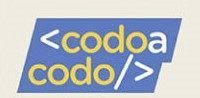
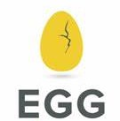
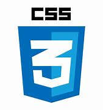
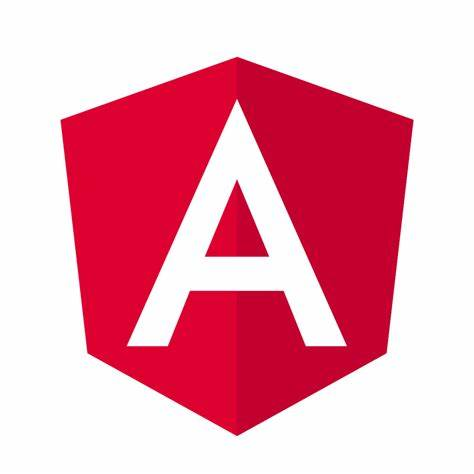

Karina R. Olivera
Full Stack Developer Jr.
Experiencia

Mantenimiento de Hardware e Insatalación de Software. 2013-2015.
Clientes particulares. Mendoza.
Actividades realizadas:
Me encargaba de la limpieza de placa madre y de la fuente de alimentacíon.
Instalación de Software de aplicación.
Data entry. Programa Todos Pueden Aprender, 2010.
Dirección General de Escuelas. Ministerio de Educación. Mendoza.
Actividades realizadas:
Me encargaba de la habilitación de escuelas en el sistema de itinerarios escolares asistidos (SITIESA). Ubicación, sector, ámbito. Estructura de grados.
Alta de docentes. Antigüedad, condición de revista.
Carga de datos filiatorios de alumnos. Inasistencias. Notas de evaluaciones.
Organización de Documentos. Practicas, 2007.
Municipalidad de Las Heras. Área Habilitación de Comercio. Mendoza.
Actividades realizadas:
Me encargaba de la organización y colocación de documentos en carpetas, para su posterior archivado.
Educación
- 
-
Desarrollo Web - FullStack JavaScript/Node.JS. 2022.
Codo a Codo 4.0 Agencia de aprendizaje a lo largo de la vida. Buenos Aires.
- 
Desarrollador FullStack Java. 2021.
EGG Educación. Mendoza.
Técnico en administración y contabilidad empresarial.
Instituto Superior Técnico de Estudios Económicos de cuyo. Mendoza. 2011.
Habilidades

- 
- 